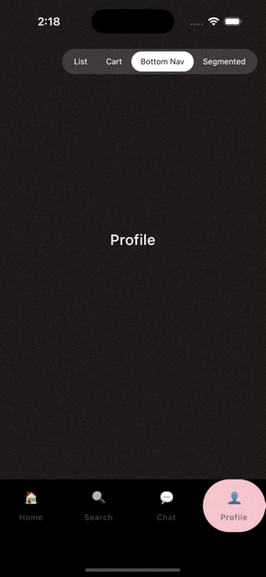

Bottom Navigation Indicator¶

A liquid pill that bridges between bottom-nav items as the selection changes. It wraps any
NavigationBar (or your own row of tabs) — you only add one Modifier and one state object.
Quick start¶
This snippet is self-contained; paste it into a @Composable screen and it runs as-is.
import androidx.compose.foundation.layout.fillMaxWidth
import androidx.compose.material3.NavigationBar
import androidx.compose.material3.NavigationBarItem
import androidx.compose.material3.NavigationBarItemDefaults
import androidx.compose.material3.Text
import androidx.compose.ui.graphics.Color
import com.veroanggra.reactify.navbar.GooeyNavIndicatorHost
import com.veroanggra.reactify.navbar.gooeyNavItem
import com.veroanggra.reactify.navbar.rememberGooeyNavIndicatorState
private data class Tab(val label: String, val color: Color)
private val tabs = listOf(
Tab("Home", Color(0xFFC8F5D4)),
Tab("Search", Color(0xFFC4E4F7)),
Tab("Chat", Color(0xFFFFF1B8)),
Tab("Profile", Color(0xFFF6C6CC)),
)
@Composable
fun MyBottomNav() {
val state = rememberGooeyNavIndicatorState(selectedIndex = 0)
GooeyNavIndicatorHost(
state = state,
color = tabs[state.selectedIndex].color,
modifier = Modifier.fillMaxWidth(),
) {
NavigationBar {
tabs.forEachIndexed { index, tab ->
NavigationBarItem(
modifier = Modifier.gooeyNavItem(state, index),
selected = state.selectedIndex == index,
onClick = { state.select(index) },
icon = { /* see "Changing the icons" below */ },
label = { Text(tab.label) },
colors = NavigationBarItemDefaults.colors(indicatorColor = Color.Transparent),
)
}
}
}
}
Three moving parts, always used together:
rememberGooeyNavIndicatorState(selectedIndex)— one state object per nav bar.Modifier.gooeyNavItem(state, index)— on every item, so the state knows where it sits.GooeyNavIndicatorHost(state, color) { ... }— wraps the nav bar and draws the pill behind it.
Setting indicatorColor = Color.Transparent on NavigationBarItemDefaults.colors(...) is
important: it stops Material's own pill from drawing on top of the gooey one.
How the state works¶
If you're new to this kind of "shared animated state" pattern, here's what happens under the hood:
rememberGooeyNavIndicatorStatecreates aGooeyNavIndicatorStateand remembers it across recompositions. It does not track selection by itself — it only reacts when you tell it to.- Each item's
Modifier.gooeyNavItem(state, index)reports that item's on-screen position and size back to the state the moment it's laid out (viaonGloballyPositioned). This is how the state knows where tab 0, 1, 2... actually are, without you hardcoding any coordinates. - Nothing is drawn until at least one item has reported its bounds — so don't worry if the pill is invisible for a single frame on first composition; that's expected and happens before the user can see it.
- You call
state.select(index)from each item'sonClick. The host never selects on its own — this keepsGooeyNavIndicatorStatea plain source of truth you can also drive from elsewhere (e.g. a ViewModel-drivenLaunchedEffect). select(index)snapshots wherever the pill currently is (even mid-animation, if you tap twice quickly) as the animation's starting point, then animates to the new item's bounds usinganimationSpec. This is why rapid taps feel fluid instead of janky or queued.GooeyNavIndicatorHostreadsstate.selectedIndexand the live animation progress every frame to build the blob shapes, and draws them on aCanvasplaced behind yourcontent(the realNavigationBar), which is why your icons and ripples still render normally on top.
In short: the state is just data + an animation; your UI decides when select() is called.
That also means you can trigger a selection change from anywhere you have a reference to state,
not only from inside the nav bar — useful for things like deep links or a "jump to tab" button.
Customizing the color¶
color is a plain androidx.compose.ui.graphics.Color — there's no special color API to learn.
// A fixed brand color
GooeyNavIndicatorHost(state = state, color = Color(0xFF6750A4)) { /* ... */ }
// Wired to your Material theme
GooeyNavIndicatorHost(state = state, color = MaterialTheme.colorScheme.primary) { /* ... */ }
// A different color per tab, swapping as selection changes (as in the Quick start above)
GooeyNavIndicatorHost(state = state, color = tabs[state.selectedIndex].color) { /* ... */ }
Because color is read on every frame the scene is built, passing an expression like
tabs[state.selectedIndex].color is enough to get the pill to recolor itself as it slides — no
extra animation code needed. If you want the color itself to crossfade (rather than snap) while
the pill moves, animate it yourself and pass the animated value in:
val animatedColor by animateColorAsState(tabs[state.selectedIndex].color)
GooeyNavIndicatorHost(state = state, color = animatedColor) { /* ... */ }
Changing the icons¶
There's no dedicated "icon" parameter — icon is just the normal @Composable content slot that
NavigationBarItem already exposes, so anything you'd normally put there works, including
swapping the icon per selection state:
import androidx.compose.material.icons.Icons
import androidx.compose.material.icons.filled.Home
import androidx.compose.material.icons.outlined.Home
import androidx.compose.material3.Icon
NavigationBarItem(
modifier = Modifier.gooeyNavItem(state, index),
selected = state.selectedIndex == index,
onClick = { state.select(index) },
icon = {
val selected = state.selectedIndex == index
Icon(
imageVector = if (selected) Icons.Filled.Home else Icons.Outlined.Home,
contentDescription = tab.label,
)
},
label = { Text(tab.label) },
)
Reactify doesn't ship an icon set itself, so add one to your own app module (not the reactify
dependency) if you don't already have vector icons:
// Compose Multiplatform (Android + iOS)
commonMain.dependencies {
implementation("org.jetbrains.compose.material:material-icons-extended:<compose-version>")
}
// Android-only app
implementation("androidx.compose.material:material-icons-extended")
Emoji Text, your own vector drawables, or an Image with a bitmap/SVG painter all work just as
well — the gooey pill only cares about the bounds reported by gooeyNavItem, not what's drawn
inside them.
Parameters reference¶
rememberGooeyNavIndicatorState
| Parameter | Default | Description |
|---|---|---|
selectedIndex |
— | Index selected the first time this state is created. Changing it on a later recomposition has no effect — use state.select(index) instead. |
animationSpec |
tween(450ms, LinearEasing) |
Drives the transition progress (0→1) each time select is called. |
GooeyNavIndicatorHost
| Parameter | Default | Description |
|---|---|---|
state |
— | The GooeyNavIndicatorState created above. |
color |
— | Fill color of the pill. Any Color, static or computed. |
cornerRadius |
null |
Corner radius of the pill. null draws a stadium shape (half the item's height) — the right choice for most pill-shaped indicators. |
smoothness |
18.dp |
How far the gooey blend reaches; higher values make the bridge between old and new position wider/softer. |
renderer |
GooeyRenderers.auto() |
See Choosing a Renderer. |
Modifier.gooeyNavItem(state, index) — no parameters beyond the state/index; apply it to the
same composable that receives selected/onClick (e.g. NavigationBarItem).
Tips & troubleshooting¶
The pill doesn't show up at all
Make sure every tab has Modifier.gooeyNavItem(state, index) applied, and that index matches
the selectedIndex you pass to rememberGooeyNavIndicatorState. The pill stays invisible until
the item at the initial selectedIndex has reported its bounds at least once.
Selecting a tab doesn't move the pill
state.select(index) must be called from onClick yourself — the host doesn't observe
selected on NavigationBarItem. If you drive selection from elsewhere (e.g. a shared
NavController), call state.select(index) wherever that selection changes.
There's a double pill
Pass indicatorColor = Color.Transparent to NavigationBarItemDefaults.colors(...) so
Material's built-in selection pill doesn't draw underneath yours.